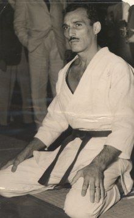
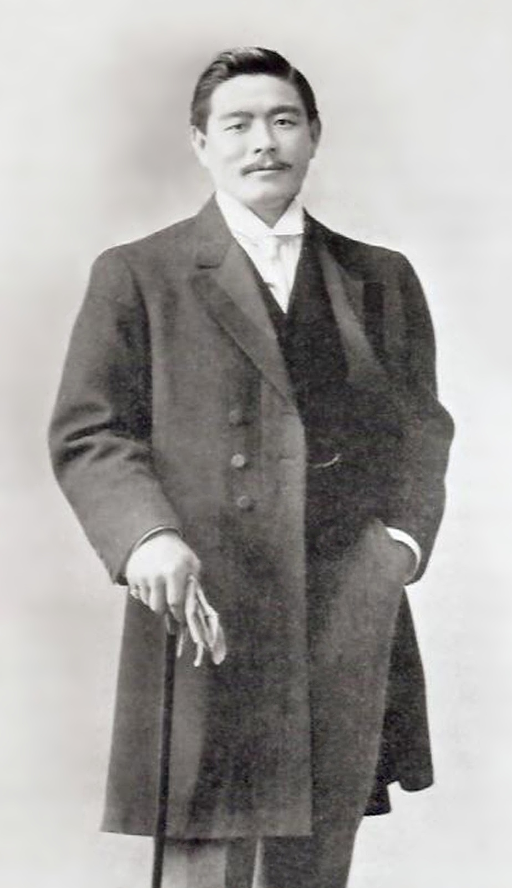

History
The BJJ story begins in Japan, where an early form of Jiu-Jitsu (also called Ju-Jitsu) was developed for use on the field of battle by Japanese samurai. These warriors, who engaged in armed battles on horseback, developed Jiu-Jitsu as the last line of defense in the event that they found themselves disarmed and afoot. However, the heavy armor worn by the samurai restricted their mobility, making chokes, joint locks, and throws preferable to striking techniques. Over time, Japanese Jiu-Jitsu branched off into a number of different styles, with the focus gradually shifting from armed combat to general self-defense. And while each style differed in certain aspects, the focus on throws, strangles, and joint locks remained a constant theme. One man’s style, however, with its emphasis on maximum efficiency and minimal effort, would eventually rise above the rest.

In 1882, Jigoro Kano, a student of traditional Japanese Jiu-Jitsu, founded a martial arts school that would come to be known as the Kodokan. At the Kodokan, Kano instructed students on what he felt were the most effective techniques of Japanese Jiu-Jitsu. A unique aspect of Kano’s art, which would eventually come to be known as Judo, was its emphasis on live sparring, also known as randori. Through randori, Kano’s students practiced throws, takedowns, joint locks, and chokes against resisting opponents. Judo’s implementation of randori represented a major departure from the prevailing training philosophy of the time, which favored compliance-based drilling over full-contact sparring. Approximately 30 years after Judo’s founding, a journey to Brazil by one of Kano’s students would set in motion a chain of events that would eventually lead to the creation of the world’s most effective ground fighting art.

Mitsuo Maeda began training at the Kodokan in 1894, eventually becoming one of Kano’s top students. While well-versed in throws and takedowns, Maeda’s specialty was ground fighting, also known as newaza. In 1914, Maeda traveled to Brazil, where he befriended a businessman named Gastão Gracie. Maeda would eventually accept Gastão’s son, a teenager name Carlos Gracie, as his student. Carlos studied Maeda’s newaza-based style of judo for several years, eventually sharing his knowledge with his younger brothers. One of his brothers, Hélio, had difficulty executing judo’s techniques due to his diminutive size and lack of strength. Consequently, he began to make adjustments to the judo techniques he had learned, refining them until they could be applied by anyone, regardless of size or strength. It was from these innovations that BJJ was born. Over the years, the Gracie family tested and refined the art of BJJ through participation in challenge matches—contests with few rules that pitted the Gracies and their students against practitioners of other martial arts. The Gracies rarely lost. The art of BJJ continued to evolve over the years, eventually incorporating aspects of wrestling and other grappling arts into the curriculum. However, BJJ would remain relatively unknown outside of Brazil until Hélio’s son, Rorion, immigrated to the United States to spread the art of BJJ—a move that would forever change the way the world viewed the art of fighting.
For further information please click here.